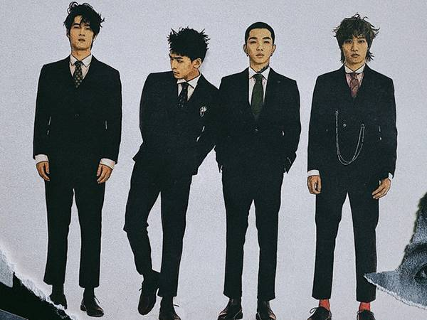

傻子與白癡
樂團組成
主唱兼貝斯手維澤與鼓手維均為高中同班同學，同時也都是新竹高中熱音社社員，經歷了初代吉他手及貝斯手離團後，找來了於熱音社成長發展時所相識的武陵熱音吉他手光良，及對音樂製作相當有概念、原先也是主唱的現任合成器手少菲加入，成為四人編制的樂團。在2018年9月左右，和葉少菲同為成功高中音創社的李沂邦加入，擔任貝斯手，五人編制的樂團正式成形。
主唱兼貝斯手維澤與鼓手維均為高中同班同學，同時也都是新竹高中熱音社社員，經歷了初代吉他手及貝斯手離團後，找來了於熱音社成長發展時所相識的武陵熱音吉他手光良，及對音樂製作相當有概念、原先也是主唱的現任合成器手少菲加入，成為四人編制的樂團。在2018年9月左右，和葉少菲同為成功高中音創社的李沂邦加入，擔任貝斯手，五人編制的樂團正式成形。